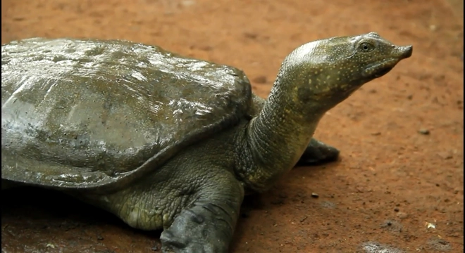
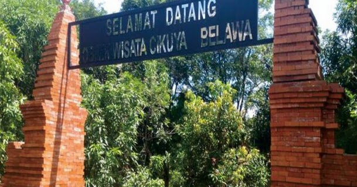
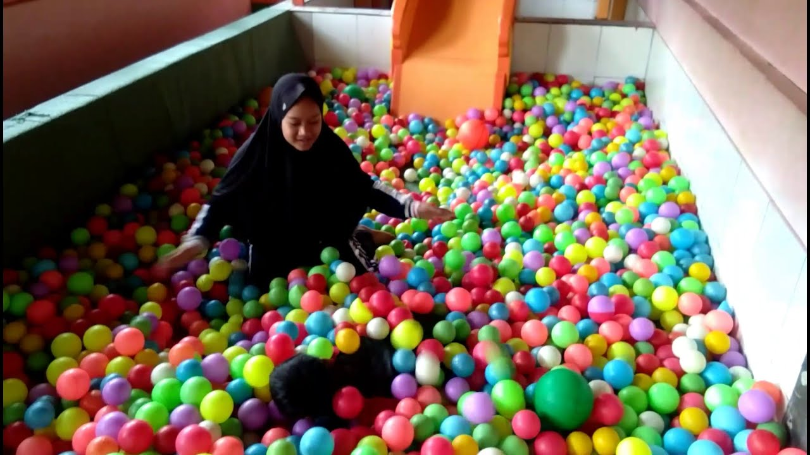

Kura Kura belawa
Kura-kura Belawa yang merupakan hewan unik yang hanya dimiliki oleh kabupaten yang berjuluk kota udang ini
Ciri khasnya ialah dimana kura kura jenis ini memiliki ciri khas di bagian punggung atau tempurungnya.
Dimana tempurungnya menyerupai punggung manusia sehingga ketika sedang berenang, kura-kura tersebut akan nampak seperti punggung manusia yang sedang berenang.Selain itu, ukuran badannya cekung dan menonjol serta
Baca selengkapnya >>>>>

Belawa adalah nama daerah yang ada di Kabupaten Cirebon
Dan Belawa adalah jenis kura kura dimana tempurungnya mirip punggung manusia.
dan spesies ini hanya ada di kabupaten Cirebon.
Baca selengkapnya >>>>>

Fasilitas di Cikuya Belawa cirebon.
Fasilitas yang ada di sekitar tempat wisata kura-kura Belawa Cirebon, diantaranya:.
MLahan parkir kendaraan
Jajanan khas sekitar
Toilet
Kolam kura kura Belawa
Tempat penangkaran kura kura Belawa
Gazebo.
Baca selengkapnya >>>>>